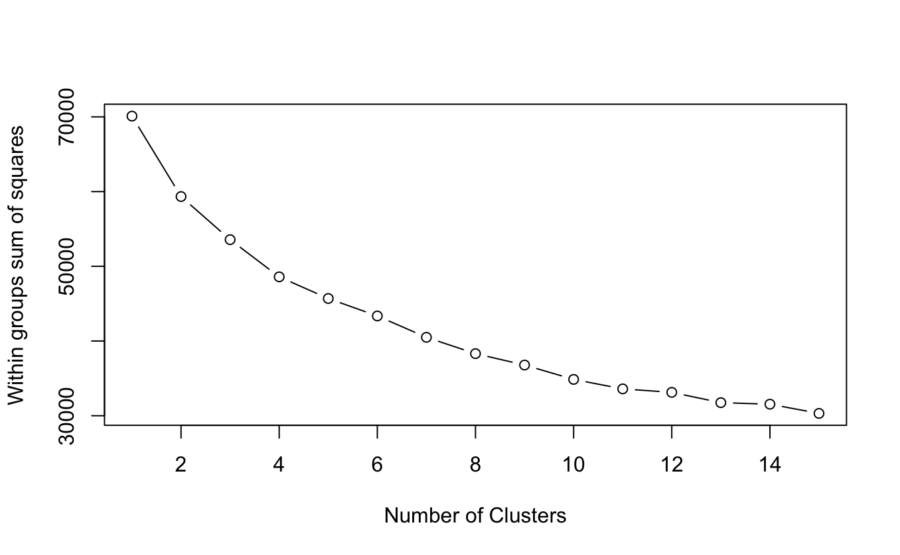
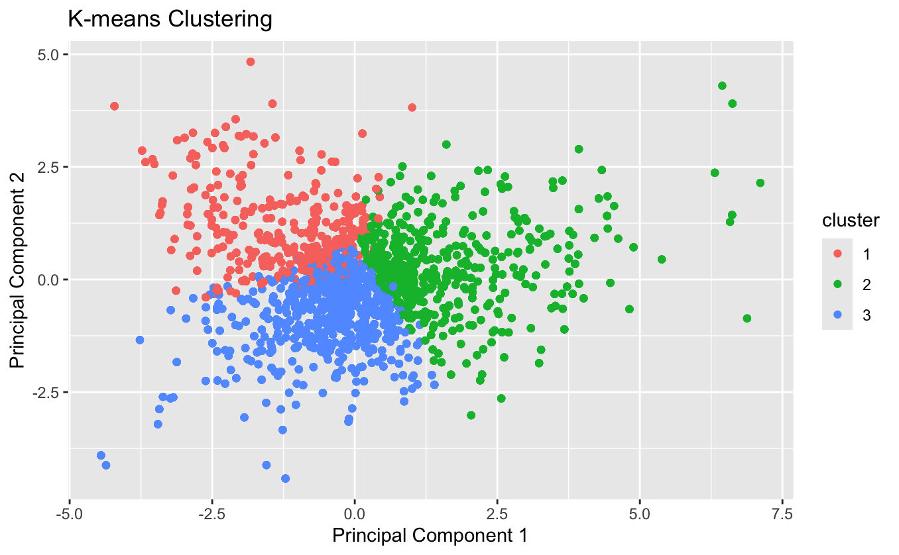
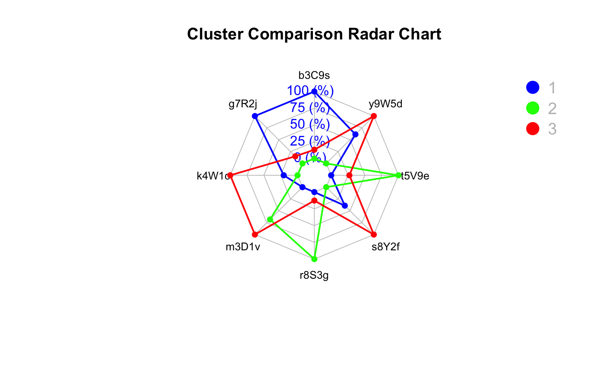

show the code
library(dplyr)
library(ggplot2)
library(tidyr)
library(lubridate)
library(cluster)
library(factoextra)
library(fmsb)
library(reshape2)
library(networkD3)Wang Yuhui
June 2, 2024
June 9, 2024
Mine personalized learning behavior patterns based on learners’ characteristics.
Design and present learners’ profiles from various perspectives, including:
-peak answering hours,
-preferred question types,
-correct answering rates, etc.
first, we merge all the submission record.
file1 <- "data/Data_SubmitRecord/SubmitRecord-Class1.csv"
file2 <- "data/Data_SubmitRecord/SubmitRecord-Class2.csv"
file3 <- "data/Data_SubmitRecord/SubmitRecord-Class3.csv"
file4 <- "data/Data_SubmitRecord/SubmitRecord-Class4.csv"
file5 <- "data/Data_SubmitRecord/SubmitRecord-Class5.csv"
file6 <- "data/Data_SubmitRecord/SubmitRecord-Class6.csv"
file7 <- "data/Data_SubmitRecord/SubmitRecord-Class7.csv"
file8 <- "data/Data_SubmitRecord/SubmitRecord-Class8.csv"
file9 <- "data/Data_SubmitRecord/SubmitRecord-Class9.csv"
file10 <- "data/Data_SubmitRecord/SubmitRecord-Class10.csv"
file11 <- "data/Data_SubmitRecord/SubmitRecord-Class11.csv"
file12 <- "data/Data_SubmitRecord/SubmitRecord-Class12.csv"
file13 <- "data/Data_SubmitRecord/SubmitRecord-Class13.csv"
file14 <- "data/Data_SubmitRecord/SubmitRecord-Class14.csv"
file15 <- "data/Data_SubmitRecord/SubmitRecord-Class15.csv"
# 读取 CSV 文件
data1 <- read.csv(file1)
data2 <- read.csv(file2)
data3 <- read.csv(file3)
data4 <- read.csv(file4)
data5 <- read.csv(file5)
data6 <- read.csv(file6)
data7 <- read.csv(file7)
data8 <- read.csv(file8)
data9 <- read.csv(file9)
data10 <- read.csv(file10)
data11 <- read.csv(file11)
data12 <- read.csv(file12)
data13 <- read.csv(file13)
data14 <- read.csv(file14)
data15 <- read.csv(file15)
submit_data <- bind_rows(data1, data2, data3, data4, data5, data6, data7, data8, data9, data10, data11, data12, data13, data14, data15,)
head(submit_data) index class time state score
1 0 Class1 1704209872 Absolutely_Correct 3
2 1 Class1 1704209852 Absolutely_Correct 3
3 2 Class1 1704209838 Absolutely_Correct 3
4 3 Class1 1704208923 Absolutely_Correct 3
5 4 Class1 1704208359 Absolutely_Correct 4
6 5 Class1 1704208330 Error1 0
title_ID method memory timeconsume
1 Question_bumGRTJ0c8p4v5D6eHZa Method_Cj9Ya2R7fZd6xs1q5mNQ 320 3
2 Question_62XbhBvJ8NUSnApgDL94 Method_gj1NLb4Jn7URf9K2kQPd 356 3
3 Question_ZTbD7mxr2OUp8Fz6iNjy Method_5Q4KoXthUuYz3bvrTDFm 196 2
4 Question_xqlJkmRaP0otZcX4fK3W Method_m8vwGkEZc3TSW2xqYUoR 308 2
5 Question_FNg8X9v5zcbB1tQrxHR3 Method_Cj9Ya2R7fZd6xs1q5mNQ 320 3
6 Question_FNg8X9v5zcbB1tQrxHR3 Method_gj1NLb4Jn7URf9K2kQPd 0 5
student_ID
1 8b6d1125760bd3939b6e
2 8b6d1125760bd3939b6e
3 8b6d1125760bd3939b6e
4 63eef37311aaac915a45
5 5d89810b20079366fcc2
6 5d89810b20079366fcc2Now we have 3 data sets in total, which are:
Student information data
Question title information
Submission record information
index student_ID sex age
Min. : 1.0 Length:1364 Length:1364 Min. :18.00
1st Qu.: 341.8 Class :character Class :character 1st Qu.:19.00
Median : 682.5 Mode :character Mode :character Median :21.00
Mean : 682.5 Mean :21.05
3rd Qu.:1023.2 3rd Qu.:23.00
Max. :1364.0 Max. :24.00
major
Length:1364
Class :character
Mode :character
index title_ID score knowledge
Min. : 1.00 Length:44 Min. :1.000 Length:44
1st Qu.:11.75 Class :character 1st Qu.:2.750 Class :character
Median :22.50 Mode :character Median :3.000 Mode :character
Mean :22.50 Mean :2.636
3rd Qu.:33.25 3rd Qu.:3.000
Max. :44.00 Max. :4.000
sub_knowledge
Length:44
Class :character
Mode :character
index class time state
Min. : 0 Length:232818 Min. :1.693e+09 Length:232818
1st Qu.: 3880 Class :character 1st Qu.:1.697e+09 Class :character
Median : 7760 Mode :character Median :1.699e+09 Mode :character
Mean : 7967 Mean :1.699e+09
3rd Qu.:11640 3rd Qu.:1.701e+09
Max. :20201 Max. :1.706e+09
score title_ID method memory
Min. :0.0000 Length:232818 Length:232818 Min. : 0.0
1st Qu.:0.0000 Class :character Class :character 1st Qu.: 188.0
Median :0.0000 Mode :character Mode :character Median : 324.0
Mean :0.8991 Mean : 347.3
3rd Qu.:2.0000 3rd Qu.: 356.0
Max. :4.0000 Max. :65536.0
timeconsume student_ID
Length:232818 Length:232818
Class :character Class :character
Mode :character Mode :character
First, we check if there is missing value in these 3 data sets.
index student_ID sex age major
0 0 0 0 0 index title_ID score knowledge sub_knowledge
0 0 0 0 0 index class time state score title_ID
0 0 0 0 0 0
method memory timeconsume student_ID
0 0 0 0 There is no missing value in all 3 data sets. Now we see if there are outliers. :
[1] "3" "2" "5" "4" "1" "9" "6" "--" "18" "61" "7" "59"
[13] "10" "8" "12" "13" "16" "15" "183" "68" "314" "64" "60" "11"
[25] "96" "94" "58" "67" "54" "17" "122" "19" "126" "14" "91" "50"
[37] "21" "40" "23" "20" "80" "31" "118" "25" "26" "29" "28" "27"
[49] "24" "65" "135" "63" "103" "114" "258" "254" "85" "66" "69" "90"
[61] "132" "173" "48" "34" "272" "38" "113" "116" "32" "76" "22" "190"
[73] "187" "73" "215" "123" "246" "146" "57" "89" "88" "30" "245" "75"
[85] "285" "70" "400" "205" "36" "164" "163" "162" "165" "266" "62" "172"
[97] "143" "184" "42" "377" "160" "33" "35" "159" "182" "41" "52" "74"
[109] "72" "46" "264" "81" "153" "83" "82" "39" "37" "56" "-" "115"
[121] "55" "286" "275" "331" "280" "274" "269" "288" "271" "136" "117" "276"
[133] "277" "356" "79" "147" "44" "350" "394" "45" "315" "321" "302" "152"
[145] "309" "47" "53" "51" "307" "201" "43" "109" "326" "49" "77" "71"
[157] "385" "78" "220" "217" "86" "134" "84" "106" "166" "124" "373" "289"For outliers “�������” , simply remove it.
valid_states <- c("Absolutely_Correct", "Absolutely_Error", "Error1", "Error2", "Error3", "Error4", "Error6", "Error7", "Error8", "Error9", "Partially_Correct")
# 过滤数据，只保留 state 列中包含指定值的行
sub_info <- sub_info %>%
filter(state %in% valid_states)
unique(sub_info$state) [1] "Absolutely_Correct" "Error1" "Absolutely_Error"
[4] "Error6" "Error4" "Partially_Correct"
[7] "Error2" "Error3" "Error7"
[10] "Error8" "Error9" For outliers “class” , replace with the highest frequency of the corresponding student_ID.
replace_class <- function(df) {
df$class <- as.character(df$class)
class_indices <- which(df$class == 'class')
for (index in class_indices) {
student_id <- df$student_ID[index]
student_classes <- df$class[df$student_ID == student_id & df$class != 'class']
class_counts <- table(student_classes)
if (length(class_counts) > 0) {
most_common_class <- names(which.max(class_counts))
df$class[index] <- most_common_class
}
}
return(df)
}
sub_info <- replace_class(sub_info)
unique(sub_info$class) [1] "Class1" "Class2" "Class3" "Class4" "Class5" "Class6" "Class7"
[8] "Class8" "Class9" "Class10" "Class11" "Class12" "Class13" "Class14"
[15] "Class15"For outliers ‘-’ and ‘–’, remove the corresponding rows.
[1] "3" "2" "5" "4" "1" "9" "6" "18" "61" "7" "59" "10"
[13] "8" "12" "13" "16" "15" "183" "68" "314" "64" "60" "11" "96"
[25] "94" "58" "67" "54" "17" "122" "19" "126" "14" "91" "50" "21"
[37] "40" "23" "20" "80" "31" "118" "25" "26" "29" "28" "27" "24"
[49] "65" "135" "63" "103" "114" "258" "254" "85" "66" "69" "90" "132"
[61] "173" "48" "34" "272" "38" "113" "116" "32" "76" "22" "190" "187"
[73] "73" "215" "123" "246" "146" "57" "89" "88" "30" "245" "75" "285"
[85] "70" "400" "205" "36" "164" "163" "162" "165" "266" "62" "172" "143"
[97] "184" "42" "377" "160" "33" "35" "159" "182" "41" "52" "74" "72"
[109] "46" "264" "81" "153" "83" "82" "39" "37" "56" "115" "55" "286"
[121] "275" "331" "280" "274" "269" "288" "271" "136" "117" "276" "277" "79"
[133] "147" "44" "350" "394" "45" "315" "321" "302" "152" "47" "53" "51"
[145] "307" "201" "43" "109" "326" "49" "77" "71" "385" "78" "220" "217"
[157] "86" "134" "84" "106" "166" "124" "373" "289"Save the dataset and name it ‘sub_info.csv’
index class time state score
1 0 Class1 1704209872 Absolutely_Correct 3
2 1 Class1 1704209852 Absolutely_Correct 3
3 2 Class1 1704209838 Absolutely_Correct 3
4 3 Class1 1704208923 Absolutely_Correct 3
5 4 Class1 1704208359 Absolutely_Correct 4
6 5 Class1 1704208330 Error1 0
title_ID method memory timeconsume
1 Question_bumGRTJ0c8p4v5D6eHZa Method_Cj9Ya2R7fZd6xs1q5mNQ 320 3
2 Question_62XbhBvJ8NUSnApgDL94 Method_gj1NLb4Jn7URf9K2kQPd 356 3
3 Question_ZTbD7mxr2OUp8Fz6iNjy Method_5Q4KoXthUuYz3bvrTDFm 196 2
4 Question_xqlJkmRaP0otZcX4fK3W Method_m8vwGkEZc3TSW2xqYUoR 308 2
5 Question_FNg8X9v5zcbB1tQrxHR3 Method_Cj9Ya2R7fZd6xs1q5mNQ 320 3
6 Question_FNg8X9v5zcbB1tQrxHR3 Method_gj1NLb4Jn7URf9K2kQPd 0 5
student_ID
1 8b6d1125760bd3939b6e
2 8b6d1125760bd3939b6e
3 8b6d1125760bd3939b6e
4 63eef37311aaac915a45
5 5d89810b20079366fcc2
6 5d89810b20079366fcc2The time span is from August 31, 2023 to January 25, 2024, a total of 148 days. However, the content in column ‘time’ is actually in seconds. So we need to convert to datetime.
From the code below we can see some titles match multiple knowledge
title_knowledge_check <- tit_info %>%
group_by(title_ID) %>%
summarise(knowledge_count = n_distinct(knowledge)) %>%
filter(knowledge_count > 1)
print(title_knowledge_check)# A tibble: 5 × 2
title_ID knowledge_count
<chr> <int>
1 Question_QRm48lXxzdP7Tn1WgNOf 2
2 Question_lU2wvHSZq7m43xiVroBc 2
3 Question_oCjnFLbIs4Uxwek9rBpu 2
4 Question_pVKXjZn0BkSwYcsa7C31 2
5 Question_x2Fy7rZ3SwYl9jMQkpOD 2Since we don’t know when the students submit the questions, which knowledge they actually focus on, so we use the probability to match the knowledge.
title_knowledge_count <- tit_info %>%
group_by(title_ID) %>%
summarise(knowledge_list = list(unique(knowledge))) %>%
mutate(knowledge = sapply(knowledge_list, function(x) ifelse(length(x) > 0, x[1], NA)),
knowledge1 = sapply(knowledge_list, function(x) ifelse(length(x) > 1, x[2], NA))) %>%
select(-knowledge_list)
# 合并知识信息到sub_info
set.seed(123) # 确保结果可重复
sub_info <- sub_info %>%
left_join(title_knowledge_count, by = "title_ID") %>%
rowwise() %>%
mutate(knowledge = ifelse(!is.na(knowledge1),
sample(c(knowledge, knowledge1), 1),
knowledge)) %>%
ungroup() %>%
select(-knowledge1)
# 查看处理后的数据框前几行
head(sub_info)# A tibble: 6 × 12
index class time state score title_ID method memory timeconsume student_ID
<int> <chr> <int> <chr> <int> <chr> <chr> <int> <chr> <chr>
1 0 Class1 1.70e9 Abso… 3 Questio… Metho… 320 3 8b6d11257…
2 1 Class1 1.70e9 Abso… 3 Questio… Metho… 356 3 8b6d11257…
3 2 Class1 1.70e9 Abso… 3 Questio… Metho… 196 2 8b6d11257…
4 3 Class1 1.70e9 Abso… 3 Questio… Metho… 308 2 63eef3731…
5 4 Class1 1.70e9 Abso… 4 Questio… Metho… 320 3 5d89810b2…
6 5 Class1 1.70e9 Erro… 0 Questio… Metho… 0 5 5d89810b2…
# ℹ 2 more variables: day <dbl>, knowledge <chr>Finally, we need to calculate the average answering correct rate and average consuming time for each student.
sub_info <- sub_info %>%
left_join(tit_info %>% select(title_ID, score), by = "title_ID")
sub_info <- sub_info %>%
mutate(rate = score.x / score.y) %>%
select(-score.x, -score.y)
head(sub_info)# A tibble: 6 × 12
index class time state title_ID method memory timeconsume student_ID day
<int> <chr> <int> <chr> <chr> <chr> <int> <chr> <chr> <dbl>
1 0 Class1 1.70e9 Abso… Questio… Metho… 320 3 8b6d11257… 2
2 1 Class1 1.70e9 Abso… Questio… Metho… 356 3 8b6d11257… 2
3 2 Class1 1.70e9 Abso… Questio… Metho… 196 2 8b6d11257… 2
4 3 Class1 1.70e9 Abso… Questio… Metho… 308 2 63eef3731… 2
5 4 Class1 1.70e9 Abso… Questio… Metho… 320 3 5d89810b2… 2
6 5 Class1 1.70e9 Erro… Questio… Metho… 0 5 5d89810b2… 2
# ℹ 2 more variables: knowledge <chr>, rate <dbl>Now we merged with student information and rearrange the column for the further analysis.
# 计算每个学生的平均rate
avg_rate <- sub_info %>%
group_by(student_ID) %>%
summarise(average_rate = mean(rate, na.rm = TRUE))
# 计算每个学生每种knowledge的百分比
knowledge_percentage <- sub_info %>%
group_by(student_ID, knowledge) %>%
summarise(counts = n()) %>%
ungroup() %>%
group_by(student_ID) %>%
mutate(total_counts = sum(counts),
percentage = counts / total_counts) %>%
select(student_ID, knowledge, percentage) %>%
spread(key = knowledge, value = percentage, fill = 0)
# 合并学生信息和计算结果
final_data <- stu_info %>%
select(-index) %>%
left_join(avg_rate, by = "student_ID") %>%
left_join(sub_info %>% select(student_ID, day) %>% distinct(), by = "student_ID") %>%
left_join(knowledge_percentage, by = "student_ID")
# 查看结果
head(final_data) student_ID sex age major average_rate day b3C9s g7R2j
1 8b6d1125760bd3939b6e female 24 J23517 0.5187266 2 0.07865169 0.06741573
2 8b6d1125760bd3939b6e female 24 J23517 0.5187266 3 0.07865169 0.06741573
3 8b6d1125760bd3939b6e female 24 J23517 0.5187266 4 0.07865169 0.06741573
4 63eef37311aaac915a45 female 21 J87654 0.1597715 2 0.01654846 0.05437352
5 63eef37311aaac915a45 female 21 J87654 0.1597715 7 0.01654846 0.05437352
6 63eef37311aaac915a45 female 21 J87654 0.1597715 4 0.01654846 0.05437352
k4W1c m3D1v r8S3g s8Y2f t5V9e y9W5d
1 0.02247191 0.2247191 0.32584270 0.02247191 0.1011236 0.1573034
2 0.02247191 0.2247191 0.32584270 0.02247191 0.1011236 0.1573034
3 0.02247191 0.2247191 0.32584270 0.02247191 0.1011236 0.1573034
4 0.00000000 0.4018913 0.07801418 0.05673759 0.1229314 0.2695035
5 0.00000000 0.4018913 0.07801418 0.05673759 0.1229314 0.2695035
6 0.00000000 0.4018913 0.07801418 0.05673759 0.1229314 0.2695035cluster_data <- final_data %>%
select(b3C9s, g7R2j, k4W1c, m3D1v, r8S3g, s8Y2f, t5V9e, y9W5d)
cluster_data[is.na(cluster_data)] <- 0
cluster_data_scaled <- scale(cluster_data)
# define the number of clusters
wss <- (nrow(cluster_data_scaled)-1)*sum(apply(cluster_data_scaled, 2, var))
for (i in 2:15) wss[i] <- sum(kmeans(cluster_data_scaled, centers=i)$tot.withinss)
# elbow plot
plot(1:15, wss, type="b", xlab="Number of Clusters", ylab="Within groups sum of squares")
set.seed(123)
kmeans_result <- kmeans(cluster_data_scaled, centers=3, nstart=20)
final_data <- final_data %>%
mutate(cluster = kmeans_result$cluster)
print(final_data)
cluster_means <- final_data %>%
group_by(cluster) %>%
summarise(across(c(b3C9s, g7R2j, k4W1c, m3D1v, r8S3g, s8Y2f, t5V9e, y9W5d), mean, na.rm = TRUE))
print(cluster_means)
# PCA scatter plot
pca <- prcomp(cluster_data_scaled)
pca_data <- data.frame(pca$x[, 1:2], cluster=as.factor(final_data$cluster))
ggplot(pca_data, aes(x = PC1, y = PC2, color = cluster)) +
geom_point() +
labs(title="K-means Clustering", x="Principal Component 1", y="Principal Component 2")# 排除第一列计算最大值和最小值
max_values <- apply(cluster_means[, -1], 2, max)
min_values <- apply(cluster_means[, -1], 2, min)
# 将最大值行、最小值行和聚类均值数据结合起来
radar_data <- rbind(max_values, min_values, cluster_means[, -1])
# 查看准备好的数据
print(radar_data)
# 生成雷达图
colors_border <- c("blue", "green", "red", "orange", "purple")
# 生成雷达图
radarchart(radar_data, axistype = 1,
pcol = colors_border, plwd = 2, plty = 1,
cglcol = "grey", cglty = 1, cglwd = 0.8,
vlcex = 0.8, title = "Cluster Comparison Radar Chart")
# 添加图例
legend(x = "topright", legend = rownames(cluster_means), bty = "n",
pch = 20, col = colors_border, text.col = "grey", cex = 1.2, pt.cex = 3)


Radar Chart Analysis
The radar chart shows the comparison of knowledge distribution across three clusters. Here are the key observations:
1. **Cluster 1 (Blue)**
• Exhibits a balanced performance across most knowledge areas, with relatively high percentages in y9W5d, g7R2j, and t5V9e.
• It shows the highest values in several knowledge areas, indicating a well-rounded skill set among the students in this cluster.
2. **Cluster 2 (Green)**
• Shows a distinctive peak in r8S3g, suggesting that students in this cluster excel particularly in this knowledge area.
• Has lower percentages in areas like t5V9e and y9W5d compared to the other clusters.
3. **Cluster 3 (Red)**
• Dominates in m3D1v and k4W1c, indicating a specialized skill set focused on these areas.
• Displays lower values in other knowledge areas such as g7R2j and b3C9s.Overall, the radar chart indicates that each cluster has distinct strengths and weaknesses across different knowledge areas.
PCA Scatter Plot Analysis
The PCA scatter plot visualizes the distribution of students based on their principal components, colored by their assigned clusters:
1. **Cluster Separation**
• The three clusters are well-separated in the PCA space, indicating that the clustering algorithm effectively distinguished between different student groups.
2. **Cluster Characteristics**
• The separation suggests that students within each cluster share similar characteristics and knowledge distributions.
• The spread of points within each cluster implies some degree of variability, with Cluster 2 appearing to be the most dispersed.Summary
The combined analysis of the radar chart and PCA scatter plot indicates that the clustering algorithm successfully identified three distinct groups of students with unique knowledge profiles. Cluster 1 has a balanced and well-rounded skill set, Cluster 2 is specialized in specific areas, and Cluster 3 shows a different specialization pattern. The clear separation in the PCA plot further supports the validity of these clusters.